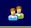

Solo Predictor Field Monitor
Introduction
Solo_Predictor includes the Solo_Predictor Field Monitor, a web-based interface for use as a real-time results monitor.
The interface can be accessed through a standard web browser application or a web-browser window embedded in a 3rd party application. Features include:
- A real-time updated display of results from applying a model to data.
- "Drill-down" functionality to view raw data, Q contributions (residuals), or Hotelling T^2 Contributions for any given sample.
- Alarm levels on predicted values exceeding high or low thresholds.
- Hover and Click-to-view numeric results for given data point(s).
- Optional user-access control with selectable user permission levels.
- Customizable Javascript and CSS-based interface.
The Field Monitor is accessible when Solo_Predictor has been configured to allow web-based connections and when the serverfolder is set (usually to the htpd folder in Solo_Predictor's main application folder.)
Trend Plot
The default mode for the field monitor is to analyze continuous processes or operations and display the prediction results as a function of time. An example of this time-based display is shown below for a regression model (predicting "Y1"), shown as the dark-blue line, along with the Q and T^2 values (dimmed red and blue lines towards the bottom of the plot). Below the figure, the values and time stamps for the currently selected points are shown. By default, the most recent collected data is selected.
Selecting Historical Values
Historical property values can be viewed by either hovering the pointer over the data of interest, by clicking on one or more points in the plot to select those points, or by clicking and dragging a box around one or more points to select. The selected properties for the selected time points are shown in the current selection table below the plot.
Initial Setup
Accessing the Field Monitor
With the serverfolder setting defined and the socket enabled, a browser can be pointed at Solo_Predictor by using the computer's IP address, plus a colon and the socket port. When accessing Solo_Predictor from the same computer with the default settings, this would be the loopback address and port 2211:
http://127.0.0.1:2211
Specifying Models
Solo_Predictor will look for available models in a folder named C:/models (for Windows - contact helpdesk for Linux) Models should be stored in the standard .mat format with a single model per file. When the page is first loaded, if no models have been copied into the models folder, the user will be advised:
Once models are present, the user will be provided a list of the available models. One or more of the available models can be selected for use. Each selected model will be applied to the data and the results shown.
Each model type defines the default values which are available for display:
- Regression models: predicted Y values are displayed along with Q and T^2 values (if applicable for the regression model type).
- Classification models: predicted probabilities for each modeled class are displayed along with Q and T^2 values (if applicable for the model type)
- Decomposition models: (e.g. MCR and PCA models) : scores for all components are displayed
Other options can be made available using custom scripts and saving those scripts as .txt files in the models folder Write Eigenvector's Help Desk for more information on this file format.
Selecting New Models - To select a new model for display, click on the axis scale on the left side of the plot. The list of available models will be given. Selected models will be highlighted. Click on any model to select/deselect the model. Click on the refresh icon (green arrows) to re-read the contents of the models folder.
Specifying Data
In order to make predictions and show results, Solo_Predictor must be given data to analyze. The typical operation mode of the Field Monitor is to show results as a function of time with real-time updating of the display.
To this end, there are various methods to load data and make it available to the Field Monitor for analysis:
- Wait-for-file, with no waitscript defined, will automatically make any imported data available to the web interface. Waitscripts can also make data available to the web interface by making use of the DataCache object.
- Third-party applications can access Solo_Predictor by Socket or ActiveX and "push" in data
- Solo_Predictor can make use of user timers to access databases or files periodically
The wait-for-file method is the easiest to use. Simply enable wait-for-file and do not specify a waitscript and the data will be made available to the Field Monitor for real-time analysis.
The maximum amount of data and maximum age of data to display is managed via the DataCache object settings.
For on-demand applications where data is collected only when a user requests it, the Field Monitor must be set up using the customization options discussed later in this document.
Clearing Field Monitor History
To clear the the Field Monitor history, follow these steps:
- Click on the EVRI logo in the top left corner, an edit box will appear below the plot
- In this edit box, type:
dc=@datacache.empty;
Drill-Down Access
The data, Q Contributions (a.k.a. residuals) and Hotelling T^2 Contributions associated with any time point can be accessed through the drill controls on the left-hand side of the selected points table. These buttons, labeled [D] [Q] and [T] access the data, Q contributions and T^2 contributions, respectively.
If more than one point is currently selected for the given property, the plot generated will contain the contributions (or data) for all time points selected in the trend plot, but with the results for the given time point (the one for which the drill control button was pressed) highlighted.
For example, the Q contributions plot below shows the Q contributions for the 11:15:15 time point highlighted, but with all other selected points shown on the same figure.
Property Alarm Limits
For many model types, the user can define high and low alarm limits for the predicted values. To set an alarm for these items, locate the [L] control in the current selection results table at the bottom of the display.
Clicking on this link will open this limits setting dialog for the given property:
Enter the desired minimum and/or maximum limit values and click "OK". To clear a limit, simply delete the corresponding value.
Once set, limits are shown as dotted lines matching the color of the property they are set for. Regions of the property which exceed the given limits will be shown with a red fill and, if selected, the corresponding value will be shown in red in the current selection table.
Once a limit is set, you can also modify the value by clicking on the dashed limit line.
These alarm limits are only used for display in the Field Monitor window. To take action such as passing alarms to distributed control systems or sending email or other physical alarms, the alarm limits must be stored in a Solo_Predictor script which will be executed with each new data arrival.
User Access Control
Solo_Predictor can be set to require any users to log into an account to access the web interface by setting the requirelogin configuration setting to "true" in the default.xml file. When enabled, the user will be prompted to provide a username and password before they can access the web interface.
Initially, there is one account with the username "admin" (no quotes) and the password "admin". When the admin account is initially accessed, the user will be required to change the password.
User Management
Users can be added, modified, and removed via the user management panel accessed from the user management button:  Only Administrative users can access the user administration page.
The user administration page will be displayed on which existing users can be edited (a user may not delete their own account, nor disable their own Adminstrator flag.)
If a user has 3 failed login attempts, their account is "locked" and will not be permitted to log in without first clearing the lock. Only an administrator can clear the locked status on the account. This lock can be cleared from the user adminstration page.
Password Requirements
Users will usually be prompted to change their password on the initial login (unless the administrator specifically un-checks the password expiration checkbox when creating the account). The new password:
- . Must not be the same as the previous password
- . Must not contain the username within it
- . Will be expired after 14 days (default setting) but can be expired by any administrator through the user administration page
Customization
Javascript Configuration Settings
Some customization of the interface can be done through the predictor.js file located in the Solo_Predictor/htpd/js folder. This file contains a header that includes various parameters which can be customized for a given application. Below is an example (although it may not reflect the currently available configuration settings). Note that the location of this file often requires administrative permission to modify.
//-------------------------------------------------------------------
//options
var drillEverything = false; //does the drill function give data and contributions all at once?
var drillDataOnly = false; //does the drill function only allow drilling data?
var maxHighlights = 25; //maximum number of points that can be highlighted at once
var maxstatlimit = 10; //largest value to show for Q and T^2 statistics use 0 to auto-scale
var alarmstatlimit = 1; //level at which alarms should be thrown for Q and T^2
var overlayBadStats = true; //overlay plot in regions where statistics are over-limit
var showDataLimits = true; //show lines indicating min/max limits
var hidestats = true; //do we hide stats (Q/T2) in the legend?
var tableNotes = 'off'; //show data notes in table? 'on' = show both labels and notes, 'off' = show only labels, 'only' = show ONLY notes (no labels)
var varplottype = 'lines'; //lines or bars for variable plots
var noDataWarning = true; //give warning if there is no data found?
var noDataMessage = ""; //alternative message to give if no data is found
var noModelList = false; //disable the ability to show the model list
var lbldefault = "Multiple Properties"; //what to show when multiple items are shown on an axis
var plotOnlyOnApply = false; //should we skip the "apply" call when applyModels is called? (e.g. has be done by other method)
//timer settings
var updateRate = 5; //rate (in seconds) at which plots are updated when autoupdating
var unPauseAfter = 60; //delay (in seconds) after last user interaction that plot is automatically un-paused
var unPauseAfterLocked = 10; //same as unPauseAfter but used when locked
var maxAttempts = 5; //more than this number of queued requests will disable the autoupdate mode
Custom Application
Custom applications can be created based around the existing interface by creating a javascript file named custom.js in the Solo_Predictor/htpd/js folder and optionally a cascading style sheet (CSS) named custom.css in the Solo_Predictor/htpd folder. The files can modify the existing configuration settings (see above), the objects on the page, and add additional objects and methods.
The interface in general is based around JQuery and Flot Charts so familiarity with both these tools is recommended. In addition, there is a JavaScript Predictor Object available which can be used to develop custom applications that interface with Solo_Predictor similarly to the Field Monitor.
Eigenvector Research can also work with customers to develop custom applications based around the web interface. Contact Eigenvector's Help Desk for more information.